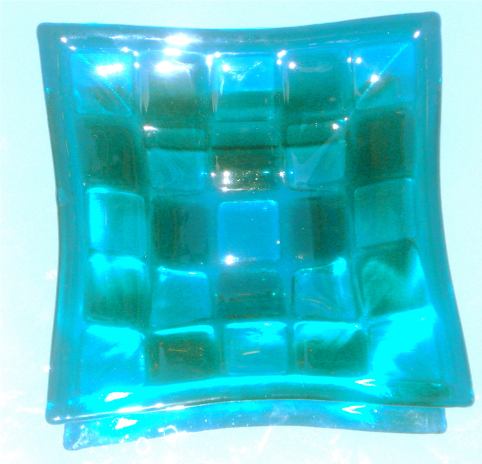

S‰vykuva 1
Kuvan vati on tehty Artistasta. Reunus ja tummat ruudut ovat kaksinkerytaista lasia,
vaaleammissa ruuduissa on toisena lasina kirkas.
Pohja eli ruutujen v‰liset raidat, on siis yksinkertasta 3mm lasia.
N‰in on saatu kolme tummuusastetta samasta v‰ris‰vyst‰.
Jos haluaa k‰ytt‰‰ muuta kuin sulatuslasia, j‰‰ s‰vyjen m‰‰r‰ kahteen,
koska kirkasta (erilaista lasia) ei voi k‰ytt‰‰ v‰rin laimennukseen.
Ruudut on kohofuusattu, jolloin pinnan linssim‰isyys lis‰‰ s‰vykkyytt‰.

seuraava kuva
Paluu tekstiin